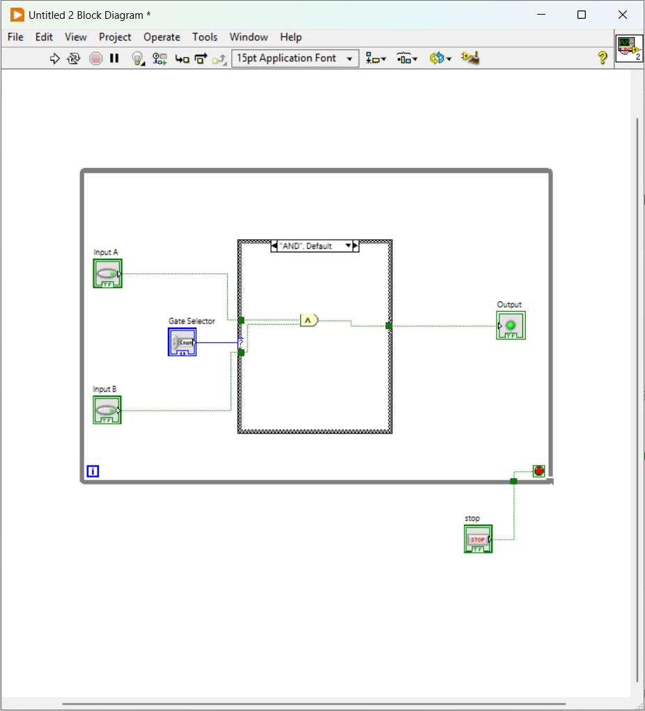

LabVIEW Digital Logic Gate Simulator
This project simulates the behavior of basic digital logic gates (AND, OR, NOT, NAND, NOR, XOR, XNOR) using LabVIEW. It is a purely software-based tool that allows students or electronics enthusiasts to learn, test, and visualize gate outputs in real time. This project was designed with simplicity in mind but lays the foundation for more complex digital simulations.
Front Panel (User Interface)

Block Diagram (Core Logic)
Features & Applications
Key Features
- Dropdown-based logic gate selection using Enum control
- Two interactive Boolean inputs for user-defined values
- Live LED-style output display for logic results
- Continuous monitoring using a While Loop
- Expandable design for larger combinational logic circuits
Applications
- Educational tool for understanding digital logic concepts
- Virtual logic lab for remote or classroom demonstrations
- Quick prototyping environment for simple logic validation
- Foundation block for building full-scale LabVIEW simulators